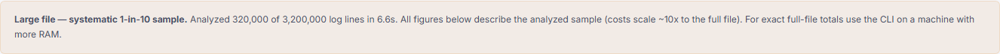

Analyzer / Guides / 1GB Logpush
Analyze 1GB Cloudflare Logpush logs free — no upload
Cloudflare Logpush fields, AWS ALB, Nginx/Apache Combined and W3C Extended auto-detect per line — mixed formats in one file are fine. Files stream in 8MB slices with .gz + multi-file rotation support (drop access.log + access.log.1 + access.log.2.gz together). Above ~300k lines a labeled systematic sample is analyzed (stride + counts + timing on-screen); 500MB+ exact totals → CLI in the repo.
Measured, not marketing
- 1.02 GB / 3,200,000 lines → 320,000 kept (1-in-10) in 6.6 s read, 13.0 s wall (headless Chromium, 2026-09-11, seed 7).
- $2.61 total, $0.25 blockable (training only), 19,272 suspicious, 427 verification warnings, 18% trap waste, 70.0% human across 15 categories.
- 10k fixture: 10,000 records, 69.9% human, $0.04 total, ~$0.00 blockable ($0.0046 training-only) — byte-identical counts pinned in
sample-data/EXPECTED.md, re-verified by CI on every push.
What the pipeline does with your file
- Stream, don't load: 8MB slices keep the tab responsive;
.gzdecompresses in-browser via DecompressionStream. A 50MB mobile guard and a 500MB desktop confirm protect small devices. - Detect per line: JSON array, JSONL/NDJSON, Apache Combined, Nginx default, W3C Extended (uses your
#Fieldsheader — without it, guess-mode parses but edge-rule generation is blocked to prevent acting on wrong columns), AWS ALB, Cloudflare Logpush. - Analyze at scale: past 20k rows a Web Worker runs the 14-step pipeline; past ~300k lines a systematic 1-in-N sample keeps analysis honest, with an on-screen banner stating stride, kept/total counts, and timing.
- Render 10 modules: Bots → Verification → Crawl Budget → Costs → AI Matrix → Edge + Policy Bundle → Performance + Traffic → Dynamics → Security → CFO, plus Crawl+GSC join and local history.
Read the output that matters
- Tab 3 · Crawl Budget: per-crawler efficiency, parameterized-URL ratios, 16 traps (gclid/fbclid, currency/locale,
/filter/, cart/variant combos,/_next/data/, price sliders) + the JS-shell table (AI-bot 200s under 5KB = zero citation chance). - Tab 4 · Costs: measured bytes × your CDN preset (CloudFront/Cloudflare/Fastly/GCS), 95% interval, blockable = training + suspicious only. Origin-compute stays OFF unless you opt in.
- Tab 6 · Edge + Policy Bundle: Cloudflare/Fastly/AWS rules with copy buttons, training-vs-search robots.txt,
crawlers.json+security.txtbundle, llms.txt, 402 pay-per-crawl example, rDNS checklist. - Tab 9 · Security: traversal,
.git/HEAD, creds,vendor/phpunit,actuator/env, SSRF probes, velocity anomalies — 14 threat patterns.

When to leave the browser
- 500MB–50GB:
node tools/cli.js --exact --in access.log --out summary.json— exact full-file totals, no sampling. - 50GB+: the BigQuery pack (DDL + 5 queries + R2→Parquet streaming + scheduled UNVERIFIED-% query) in Tab 6 / BIGQUERY.md.
- Test data: pick a URL range in the tool (0–100 … 1M–10M, each with max-size estimate) or
npm run gen-logs -- --lines N --out file.jsonl(deterministic seeds).
FAQ
1GB upload fails? Use a modern desktop browser (not a phone), accept the >500MB confirm, stay on the tab. You will see Reading % then analysis %. Costs describe the analyzed sample and scale ~Nx — the banner says exactly how much.
"No valid records found"? The error reports lines seen + detected format. Compare your first line with the How To Use examples — usually a custom column order (add a #Fields header) or a truncated download.
Is sampling honest? The banner shows stride, kept/total lines, and read time; verification counts are scaled and labeled. No silent extrapolation anywhere.
References
- Full numbers: 1.02 GB teardown · Pinned 10k counts:
sample-data/EXPECTED.md· Scale-up path:BIGQUERY.md. - Companion: Block training bots · Tool comparison.